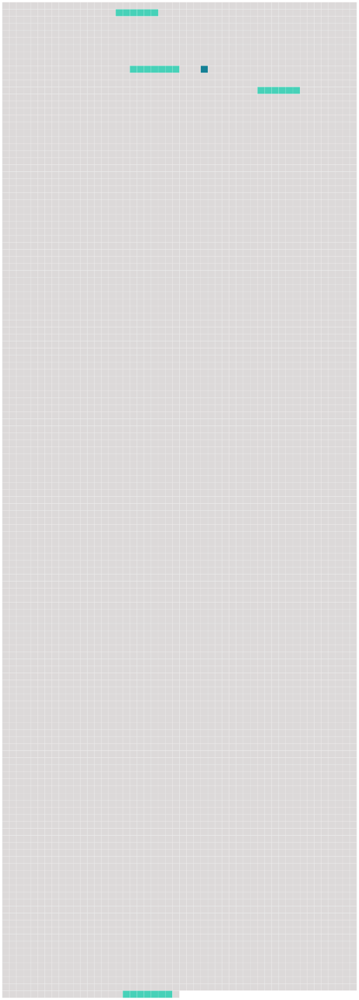

Longueur nb maillons : 5 mentions |
 |
f ) On entend par « immersion » : [4 phrases]
k ) On entend par « sources offshore » : [les installations offshore et les pipelines offshore] , à partir [desquels] des substances ou de l'énergie parviennent à la zone maritime. [3 phrases]
Cette expression vise les appareils sur coussin d'air, les appareils flottants automoteurs ou non, ainsi que d'autres structures artificielles se trouvant dans la zone maritime, de même que leur équipement, mais ne vise pas [les installations et les pipelines offshore] [212 phrases]
Annexe II |
 |
Il est possible de télécharger la ressource sur la page Ortolang |
Si vous avez des questions ou vous voyez des erreurs, merci d'envoyer un mail à silvia.federzoni89@gmail.com |